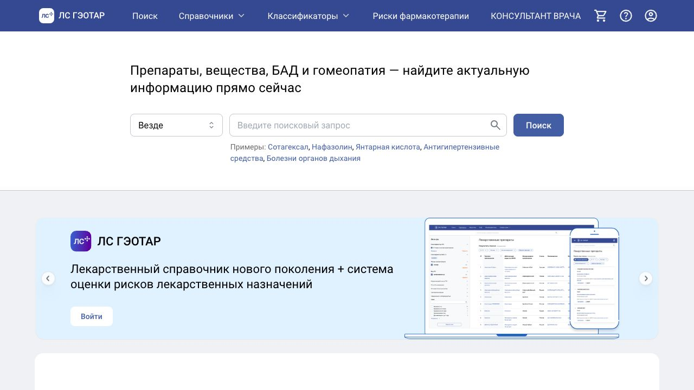
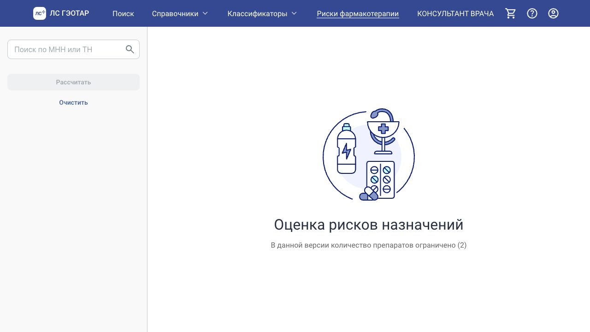

О работе #
В рамках лабораторной работы подготовлена Software Requirements Specification для веб-сервиса «ЛС ГЭОТАР». Это аналитический проект: я исследовал существующий продукт и формализовал требования к справочнику лекарственных средств, модулю оценки рисков фармакотерапии, подписке, корпоративному доступу и API.
Вариант: 467289
Формат: SRS, use cases, acceptance criteria, COCOMO II
Итоговая оценка: 19,5 человеко-месяца / 3120 человеко-часов
Работа описывает требования и проектные оценки. Она не означает участие в разработке официального сервиса «ЛС ГЭОТАР».
Исследованный продукт #
Сервис предоставляет справочную информацию о препаратах, действующих веществах, БАД и гомеопатии. Отдельный сценарий — анализ лекарственных назначений: взаимодействия, противопоказания и дублирование эффектов.

На главной странице выделены ключевые продуктовые направления: универсальный поиск, энциклопедия лекарственных средств, оценка рисков, подписка и корпоративный доступ.
Цель спецификации #
Перевести возможности продукта в проверяемую систему требований, пригодную для дальнейшего проектирования, оценки сроков и приёмки. Для каждого ключевого требования определены:
- назначение и источник;
- приоритет;
- сложность и риски;
- измеримые критерии приёмки;
- оценка трудозатрат по COCOMO II.
Пользователи и заинтересованные стороны #
| Роль | Основная задача | Требуемый доступ |
|---|---|---|
| Гость | Поиск и просмотр базовой лекарственной информации | Бесплатный |
| Зарегистрированный пользователь | Расширенные лимиты и персональные сценарии | Авторизованный |
| Пользователь PRO | Анализ назначений и расширенный функционал | Платная подписка |
| Корпоративный пользователь | Интеграция с МИС и массовый доступ | Организационный / API |
| Администратор или редактор | Управление данными, ролями, тарифами и аудитом | Привилегированный |
Область продукта #
- справочник препаратов, веществ, БАД и гомеопатических средств;
- поиск по названию и характеристикам;
- классификаторы АТХ и МКБ-10;
- карточки лекарственных препаратов;
- оценка рисков фармакотерапии;
- регистрация, вход и восстановление доступа;
- подписки и тарифные ограничения;
- корпоративный API и интеграция с МИС;
- административное управление и аудит.
Функциональные требования #
| ID | Требование | Приоритет | Критерий приёмки | Оценка |
|---|---|---|---|---|
| FR-1 | Универсальный поиск по препаратам, веществам, БАД и гомеопатии | Must have | Автодополнение с трёх символов; 95% запросов быстрее двух секунд | 1,2 чел.-мес. |
| FR-2 | Структурированная карточка лекарственного препарата | Must have | Основные разделы корректны; открытие быстрее двух секунд | 1,3 чел.-мес. |
| FR-3 | Навигация по АТХ, МКБ-10, компаниям и связанным сущностям | Must have | Фильтры, пагинация и переходы работают без ошибок | 1,1 чел.-мес. |
| FR-4 | Анализ взаимодействий, противопоказаний и дублирования | Must have | Воспроизводимый отчёт формируется быстрее пяти секунд | 2,4 чел.-мес. |
| FR-5 | Регистрация, аутентификация и восстановление доступа | Must have | Защищённые сессии и безопасное хранение паролей | 1,5 чел.-мес. |
| FR-6 | Подписки, тарифы, лимиты и права доступа | Must have | Права активируются после оплаты; лимиты применяются корректно | 1,4 чел.-мес. |
| FR-7 | API для интеграции с медицинскими системами | Should have | API документирован, защищён ключами и rate limiting | 1,7 чел.-мес. |
| FR-8 | Административная панель | Must have | CRUD, роли и журнал действий работают согласованно | 2,1 чел.-мес. |
Главный пользовательский сценарий #
Модуль оценки рисков принимает список препаратов и формирует результат анализа. В требованиях отдельно учитываются тарифные ограничения, обработка неизвестного препарата и повторный расчёт после изменения списка.

Основной поток:
- Пользователь открывает модуль оценки рисков.
- Добавляет препараты по международному непатентованному или торговому наименованию.
- Система проверяет допустимое количество препаратов для текущего тарифа.
- Выполняется анализ взаимодействий, противопоказаний и дублирования.
- Пользователь получает структурированный отчёт и рекомендации.
Альтернативные сценарии предусматривают замену препарата, превышение лимита тарифа и отсутствие позиции в справочнике.
Пользовательские требования #
| ID | Требование | Метрика | Оценка |
|---|---|---|---|
| UR-1 | Понятный интерфейс | Сценарий «поиск → карточка → вывод» без обучения | 0,7 чел.-мес. |
| UR-2 | Быстрый отклик | Основные операции до трёх секунд в 95% случаев | 0,8 чел.-мес. |
| UR-3 | Мобильная адаптация | Работа в браузерах смартфонов и планшетов | 0,8 чел.-мес. |
| UR-4 | Ясные предупреждения | Медицинские дисклеймеры видимы в критических сценариях | 0,3 чел.-мес. |
Требования владельца #
| ID | Требование | Назначение | Оценка |
|---|---|---|---|
| OR-1 | Подписки и корпоративные тарифы | Монетизация и разграничение функций | 0,6 чел.-мес. |
| OR-2 | Аналитика использования | Запросы, активность, конверсия и API | 0,5 чел.-мес. |
| OR-3 | Контроль актуальности данных | Версионность и отчётность по обновлениям | 0,9 чел.-мес. |
| OR-4 | Поддержка пользователей | Обращения, статусы и шаблоны ответов | 0,5 чел.-мес. |
Нефункциональные требования #
Производительность #
- до 10 000 пользователей в сутки;
- до 500 одновременных пользователей;
- загрузка основных страниц не более трёх секунд для 95% обращений.
Надёжность #
- доступность не ниже 99,5% в год;
- регулярное резервное копирование;
- документированный план восстановления.
Безопасность #
- HTTPS для всех соединений;
- безопасное хранение паролей;
- защита от SQL injection, XSS, CSRF и других рисков OWASP Top 10;
- соблюдение требований законодательства о персональных данных.
Масштабируемость и совместимость #
- горизонтальное масштабирование web- и API-слоёв;
- stateless-подход и кэширование;
- Chrome, Firefox, Safari и Edge;
- мобильные браузеры iOS и Android.
Карта рисков #
| Риск | Вероятность | Влияние | Меры снижения |
|---|---|---|---|
| Ошибки или неполнота лекарственных данных | Средняя | Высокое | Валидация, контроль версий, отчёты по обновлениям |
| Перегрузка системы | Средняя | Высокое | Кэширование, балансировка, нагрузочное тестирование |
| Неверная интерпретация медицинской информации | Средняя | Высокое | Дисклеймеры, роли и журналирование |
| Уязвимости безопасности | Низкая | Критическое | OWASP-практики, аудит, WAF и MFA |
| Сложность SSO, оплаты и API | Средняя | Среднее | Тестовые стенды, контракты API и мониторинг |
Спецификации use cases #
В отчёте описаны пять прецедентов по единому шаблону: акторы, цель, преимущества, частота, триггер, предусловия, постусловия, основной и альтернативный потоки, исключения.
UC-1. Поиск препарата #
Гость или авторизованный пользователь вводит название либо атрибут препарата. Система показывает подсказки и релевантные результаты, после выбора открывает карточку сущности. Для пустой выдачи предлагается изменить запрос.
UC-2. Просмотр карточки препарата #
Пользователь получает структурированную справочную информацию, инструкцию, статус, дату обновления и связанные материалы. Отдельно учитываются временная недоступность данных и ограничения просмотра.
UC-3. Расчёт рисков фармакотерапии #
Пользователь формирует список назначений, система применяет тарифные ограничения и рассчитывает взаимодействия, противопоказания и дублирование эффектов.
UC-4. Оформление подписки #
Авторизованный пользователь выбирает тариф, переходит к платёжному сервису и после подтверждения получает соответствующие права. Обрабатываются отказ оплаты и недоступность провайдера.
UC-5. Управление данными и пользователями #
Администратор управляет справочными сущностями, пользователями, тарифами и аудитом. Изменения валидируются, сохраняются и фиксируются в журнале действий.
Критерии приёмки #
Подготовлено десять сквозных проверок:
- релевантность и скорость универсального поиска;
- полнота карточки препарата;
- работа справочников, фильтров и классификаторов;
- формирование воспроизводимого отчёта о рисках;
- безопасность регистрации и входа;
- автоматическое применение подписки и лимитов;
- API keys, rate limiting и журналирование;
- CRUD и аудит в административной панели;
- мобильная адаптация;
- HTTPS и отсутствие критических уязвимостей OWASP Top 10.
Сводная оценка #
| Категория | Количество требований | Ключевая сложность |
|---|---|---|
| Функциональные | 8 | Анализ рисков, безопасность, API и администрирование |
| Пользовательские | 4 | Скорость, понятность и мобильная адаптация |
| Требования владельца | 4 | Монетизация, аналитика и актуальность данных |
| Нефункциональные | 6 | Надёжность, безопасность и масштабирование |
| Всего | 22 | 19,5 чел.-мес. / 3120 чел.-часов |
Результат #
Получился связный SRS-документ, который переводит возможности сложного медицинского сервиса в измеримые требования и сценарии проверки. Его можно использовать как основу для проектирования архитектуры, формирования backlog, планирования команды и приёмочного тестирования.
Скриншоты сделаны с официального сайта lsgeotar.ru 22 июня 2026 года и используются здесь только для иллюстрации учебного анализа.